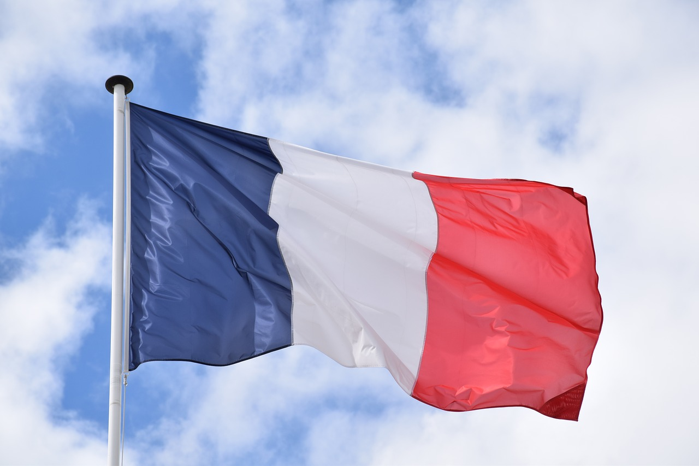
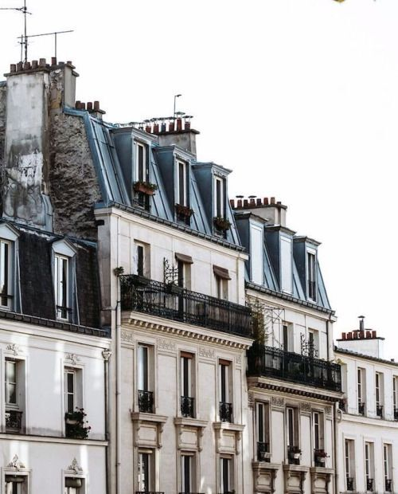

LOCALIZAÇÃO
Paris é a capital da França, mundialmente conhecida e muito visitada ao longo do ano por conta de seus pontos turísticos. Conheça os três principais:
1. Torre Eiffel

A Torre Eiffel é um monumento de ferro de 330 metros construído em Paris por Gustave Eiffel em 1889. Originalmente temporária, tornou-se o maior símbolo da França e atrai milhões de turistas todos os anos. O local conta com três níveis de visitação acessíveis por escadas ou elevador, oferecendo vistas panorâmicas da cidade.
2. Museu do Louvre

O Louvre é o maior museu do mundo, instalado em uma antiga fortaleza e palácio real medieval. Sua entrada é marcada pela famosa pirâmide de vidro, que dá acesso a um acervo de mais de 480 mil itens. Garante fama mundial por abrigar relíquias inestimáveis da humanidade, incluindo a pintura da Mona Lisa.
3. Rio Sena

O Sena divide Paris ao meio e suas margens históricas são consideradas Patrimônio da UNESCO. Ele conecta os principais monumentos através de 37 pontes e oferece banhos públicos gratuitos no verão. Seus tradicionais passeios de barco permitem contemplar a linda vista de paris
CULINÁRIA

A culinária de Paris é famosa em todo o mundo. Entre os alimentos mais conhecidos estão o croissant, a baguete, os macarons, os queijos franceses e o crème brûlée. A cidade também é conhecida por seus cafés e restaurantes tradicionais.
CURIOSIDADES
1. Cidade Luz

Paris é conhecida como "Cidade Luz" por ter sido uma das primeiras cidades da Europa a possuir iluminação pública e por sua grande importância cultural.
2. Moda
Paris é considerada uma das capitais mundiais da moda. Grandes marcas e desfiles famosos acontecem na cidade todos os anos.
3. Idioma

O idioma oficial é o francês, mas em muitos pontos turísticos também é possível encontrar pessoas que falam inglês.
HISTÓRIA
A História da França é marcada por transformações profundas que moldaram a cultura, a política e a sociedade do mundo ocidental. Habitada originalmente pelos gauleses, a região foi incorporada ao Império Romano e, após sua queda, dominada pelos francos sob o comando de líderes como Clóvis e Carlos Magno, consolidando a monarquia medieval que enfrentaria grandes conflitos, como a Guerra dos Cem Anos. Entre os séculos XVI e XVIII, o país atingiu o ápice do absolutismo com o rei Luís XIV, ao mesmo tempo em que se tornava o berço do Iluminismo, cujos ideais de liberdade e razão culminaram na Revolução Francesa de 1789, responsável por derrubar a monarquia e difundir os direitos humanos. Esse período turbulentos abriu caminho para a era de expansão promovida por Napoleão Bonaparte na Europa. Durante o século XIX, a França alternou entre governos republicanos e monárquicos enquanto se industrializava e expandia seu império colonial, até enfrentar o impacto devastador das duas grandes guerras mundiais no século XX. Reconstruído no pós-guerra sob a liderança de Charles de Gaulle, o país tornou-se um dos pilares da fundação da União Europeia e consolida-se hoje como uma das maiores potências econômicas, políticas e culturais do planeta.
ARTE E CULTURA

Paris consolida-se como um dos maiores e mais influentes centros de arte e cultura do mundo devido à sua extraordinária concentração de patrimônio histórico, instituições museológicas de prestígio global e uma trajetória marcada por revoluções estéticas e intelectuais. A capital francesa abriga acervos inestimáveis em locais como o Museu do Louvre, o Musée d'Orsay e o Centro Pompidou, ao mesmo tempo em que preserva ícones arquitetônicos como a Catedral de Notre-Dame e a Torre Eiffel. Historicamente impulsionada pela reforma urbana do Barão Haussmann no século XIX, a cidade serviu de berço para o Iluminismo, o Impressionismo e o Existencialismo, tornando-se o ponto de encontro de grandes nomes da literatura, da pintura e da música, além de manter uma cena viva de artes cênicas simbolizada por teatros seculares como a Comédie-Française e palcos renomados como a Opéra Palais Garnier.
ARQUITETURA

Paris é conhecida por sua arquitetura elegante e histórica. A cidade possui prédios antigos, grandes avenidas, igrejas, palácios e monumentos que mostram diferentes períodos da história francesa.